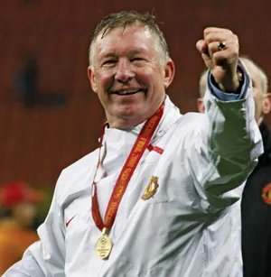
Sir Alex Ferguson
Legendary Manager
A journey through our achievements

Sir Alex Ferguson
Legendary Manager
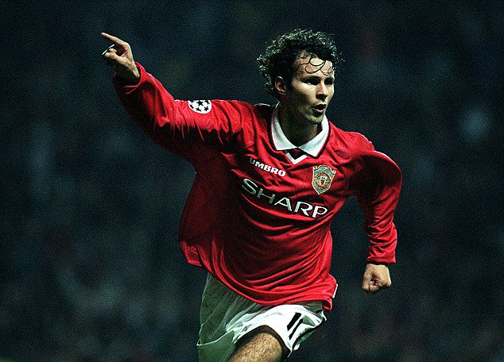
Ryan Giggs
Legendary Player
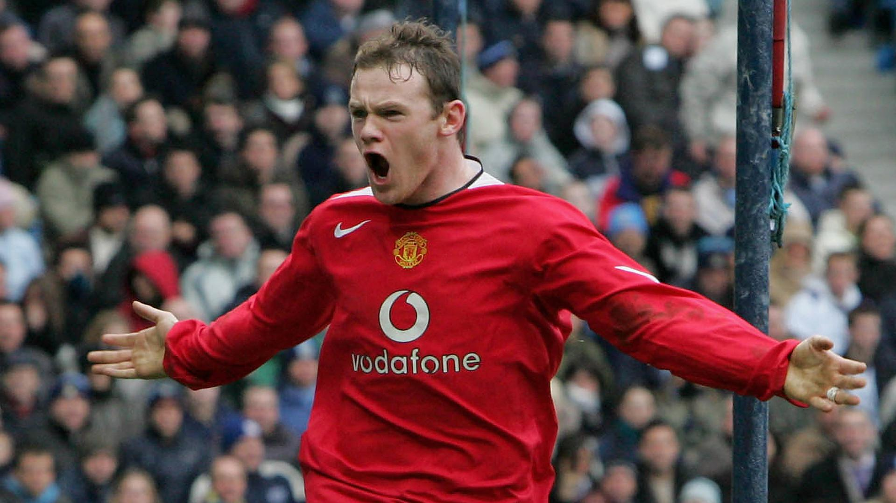
Wayne Rooney
Legendary Player
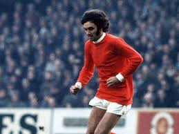
George Best
Legendary Player
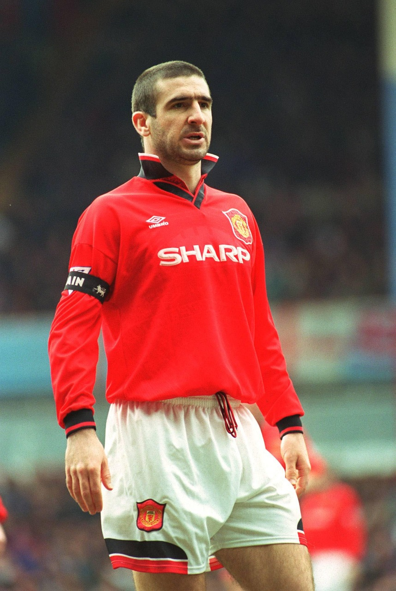
Eric Cantona
Legendary Player
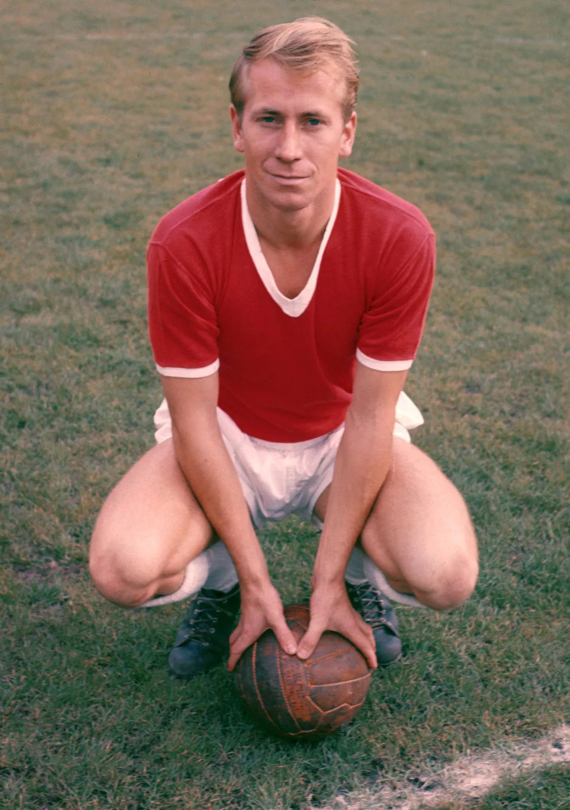
Bobby Charlton
Legendary Player
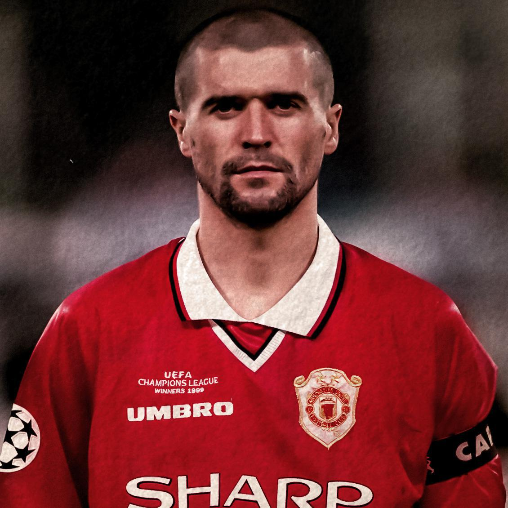
Roy Keane
Legendary Player
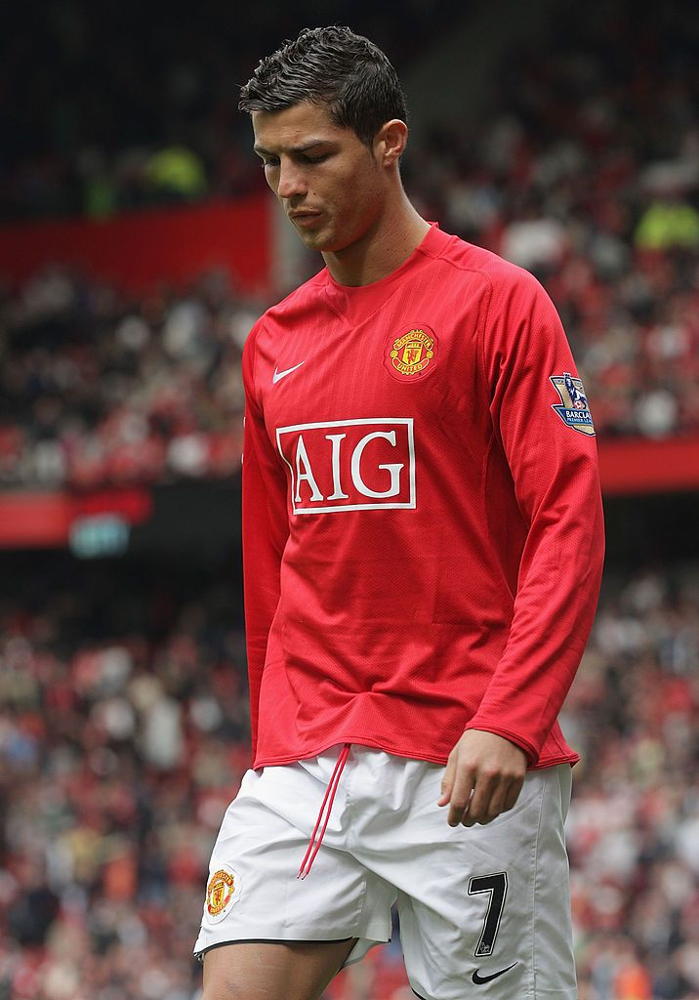
Cristiano Ronaldo
Legendary Player
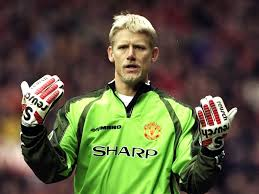
Peter Schmeichel
Legendary Goalkeeper
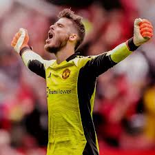
David De Gea
Legendary Goalkeeper
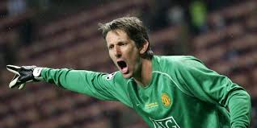
Edwin Van Der Sar
Legendary Goalkeeper
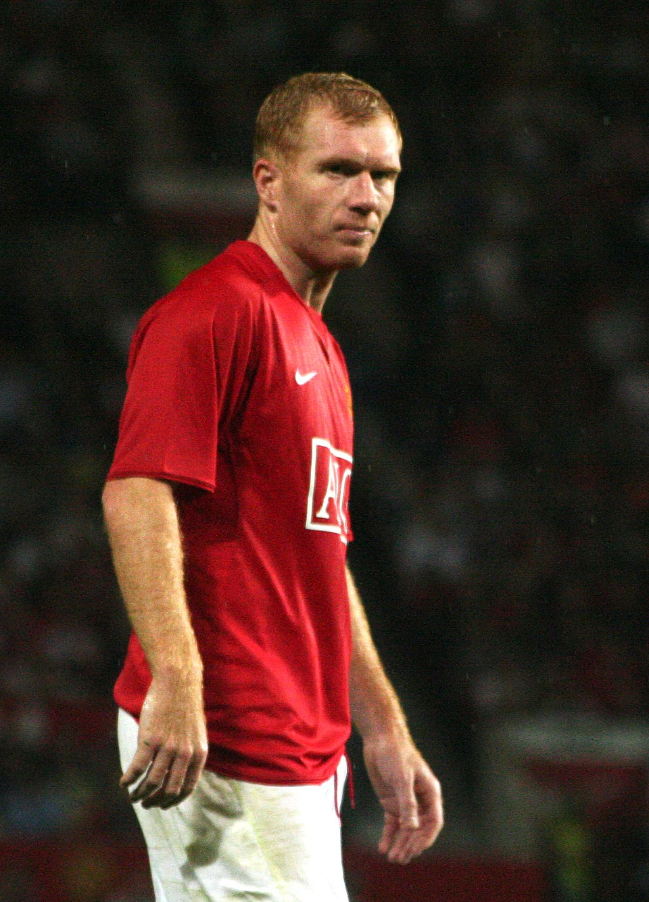
Paul Scholes
Legendary Player
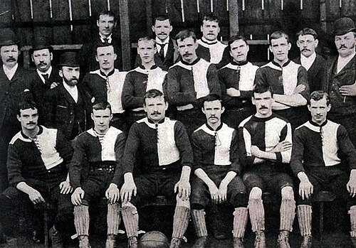
1878 – Club Founded
Manchester United was founded as Newton Heath LYR Football Club by railway workers in Manchester.
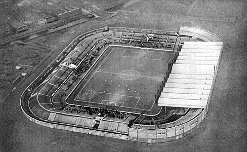
1910 – Old Trafford Opens
Old Trafford became the club’s permanent home and remains one of football’s most iconic stadiums.
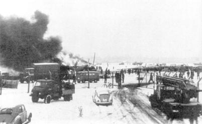
1958 – Munich Air Disaster
A tragic air crash claimed the lives of eight players, deeply impacting the club and world football.
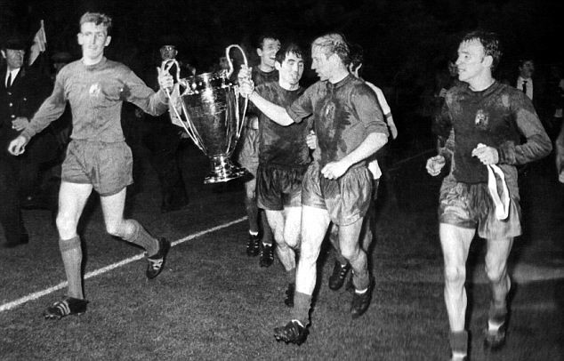
1968 – European Cup Victory
Manchester United became the first English club to win the European Cup.
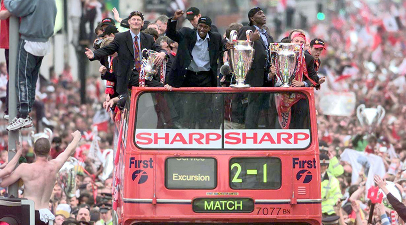
1999 – Historic Treble
The club won the Premier League, FA Cup, and Champions League in one season.
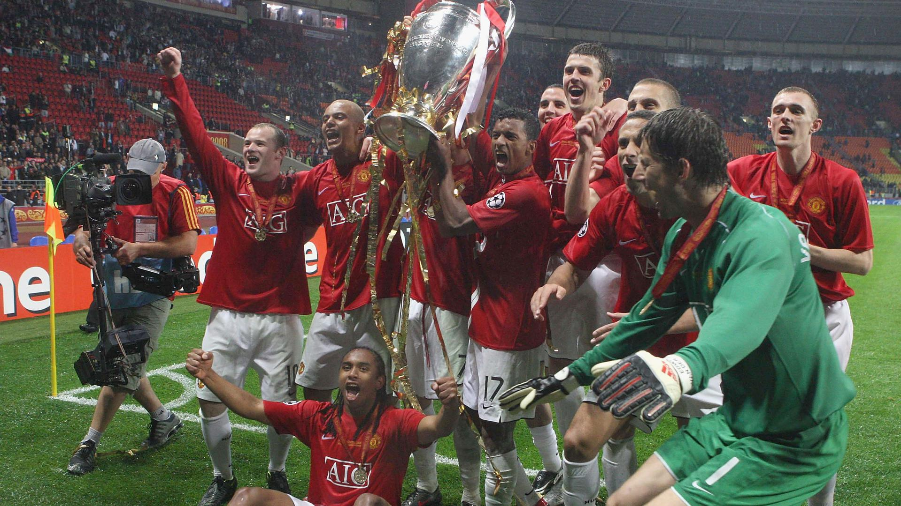
2008 – European Cup Victory
Manchester United won the European Cup again, solidifying their status as one of the greatest clubs in football history.